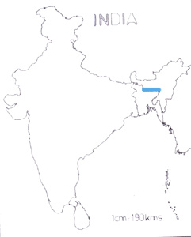

<head>
<meta http-equiv="Content-Type" content="text/html; charset=windows-1252">
<meta name="GENERATOR" content="Microsoft FrontPage 4.0">
<meta name="ProgId" content="FrontPage.Editor.Document">
<title>New Page 1</title>
<meta http-equiv="Content-Type" content="text/html; charset=windows-1252">
<meta name="GENERATOR" content="Microsoft FrontPage 4.0">
<meta name="ProgId" content="FrontPage.Editor.Document">
<title>ECONOMICALLY IMPORTANT PLANTS OF INDIA compiled by K</title>
<meta http-equiv="Content-Type" content="text/html; charset=windows-1252">
<meta name="GENERATOR" content="Microsoft FrontPage 4.0">
<meta name="ProgId" content="FrontPage.Editor.Document">
<title>ECONOMICALLY IMPORTANT PLANTS OF INDIA</title>
<meta http-equiv="Content-Type" content="text/html; charset=windows-1252">
<meta name="GENERATOR" content="Microsoft FrontPage 4.0">
<meta name="ProgId" content="FrontPage.Editor.Document">
<title>New Page 1</title>
<META HTTP-EQUIV="CONTENT-TYPE" CONTENT="text/html; charset=windows-1252">
<TITLE>Aegle marmelos </TITLE>
<META NAME="GENERATOR" CONTENT="Microsoft FrontPage 4.0">
<META NAME="CREATED" CONTENT="20010726;17265013">
<META NAME="CHANGEDBY" CONTENT="L.Sowmya">
<META NAME="CHANGED" CONTENT="20020726;13003551">
<META NAME="DESCRIPTION" CONTENT="Economically Important Plants">
<META NAME="KEYWORDS" CONTENT="Abies pindrow">
<META NAME="ProgId" CONTENT="FrontPage.Editor.Document">
<STYLE>
	<!--
		P { color: #2c9a97 }
	-->
	</STYLE>
<meta name="Microsoft Theme" content="none">
<link>
</head>

<body LANG="en-US" bgcolor="#CCCCCC" text="#009999">
<P><A NAME="begin"></A>
</P>
<table border="1" width="100%">
  <tr>
    <td width="100%" bgcolor="#1658BC">
      <P ALIGN=CENTER><b><font face="Verdana" size="6" color="#FFFFFF">Digitized
      Inventory of Animal Resources: Mammalia&nbsp;</font></b> <font color="#FFFFFF"><br>
      <b>
      Principal Investigator: Dr. R. J. B Alfred, Co-Investigator: Dr. Rama Krishna, Contributed by:
      Dr. M.S.Pradhan</b></font><br>
      </P>
    </td>
  </tr>
</table>
<p ALIGN="CENTER">&nbsp;</p>
<p ALIGN="CENTER">&nbsp;</p>
<P ALIGN=center><b><font size="6" face="Comic Sans MS" color="#009999">&nbsp;&nbsp;</font><a href="http://stp.unipune.ernet.in/zsi/photomap.html?code=4"><b style="mso-bidi-font-weight:normal"><i style="mso-bidi-font-style:normal"><font size="6" face="Comic Sans MS" color="#808000"><span style="mso-ansi-font-size: 9.0pt; mso-bidi-font-size: 12.0pt; font-family: Verdana">Ia
io</span></font></i><font size="6" face="Comic Sans MS" color="#808000"><span style="mso-ansi-font-size: 9.0pt; mso-bidi-font-size: 12.0pt; font-family: Verdana">,
Thomas </span></font></b></a><font size="6" face="Comic Sans MS" color="#808000"><span style="mso-bidi-font-size: 12.0pt; font-family: Verdana"><span style="mso-spacerun: yes">&nbsp;</span><o:p>
</o:p>
</span>&nbsp;&nbsp;</font><font size="6" face="Comic Sans MS" color="#009999">&nbsp;&nbsp;&nbsp;&nbsp;&nbsp;&nbsp;&nbsp;&nbsp;&nbsp;&nbsp;&nbsp;&nbsp;&nbsp;</font></b></P>
<P ALIGN=LEFT><A HREF="#Taxonomic Details"><FONT FACE="Comic Sans MS">Taxonomic 
  Details</FONT> </A><FONT FACE="Comic Sans MS"><BR>
  ----- </FONT><A HREF="#Scientific Name"><FONT FACE="Comic Sans MS">Scientific Name</FONT></A><FONT FACE="Comic Sans MS"><BR>
  ----- </FONT><A HREF="#Classification"><FONT FACE="Comic Sans MS">Classification</FONT></A><FONT FACE="Comic Sans MS"><BR>
  ----- </FONT><A HREF="#Synonyms"><FONT FACE="Comic Sans MS">Synonyms</FONT></A><FONT FACE="Comic Sans MS"><BR>
  ----- </FONT><A HREF="#Common Names"><FONT FACE="Comic Sans MS">Common Names</FONT></A><FONT FACE="Comic Sans MS"><BR>
  </FONT><A HREF="#Other Biological Details"><FONT FACE="Comic Sans MS">Other 
  Biological Details</FONT></A><FONT FACE="Comic Sans MS"><BR>
  ----- </FONT><A HREF="#Habit and Habitat"><FONT FACE="Comic Sans MS">Habit and 
  Habitat</FONT></A><FONT FACE="Comic Sans MS"><BR>
  ----- </FONT><A HREF="#Distribution"><FONT FACE="Comic Sans MS">Distribution</FONT></A><FONT FACE="Comic Sans MS"><BR>
  ---------- </FONT><A HREF="#Extend of Occurance"><FONT FACE="Comic Sans MS">Extent of
Occurrence</FONT></A><FONT FACE="Comic Sans MS"><BR>
  ---------- </FONT><A HREF="#Area of occurance"><FONT FACE="Comic Sans MS">Area of
</FONT></A><A HREF="#Area of occurance"><font face="Comic Sans MS">occurrence</font></A><FONT FACE="Comic Sans MS"><BR>
  ---------- </FONT><A HREF="#Altitude:"><FONT FACE="Comic Sans MS">Altitude</FONT></A><FONT FACE="Comic Sans MS"><BR>
  ---------- </FONT><A HREF="#Population:"><FONT FACE="Comic Sans MS">Population</FONT></A><FONT FACE="Comic Sans MS"><BR>
  ----- </FONT>
  <A HREF="#Conservation Status:"><FONT FACE="Comic Sans MS">Conservation Status</FONT></A><FONT FACE="Comic Sans MS"><BR>
  ----- </FONT>
  <A HREF="#Diagnostic Features"><FONT FACE="Comic Sans MS">Diagnostic 
  Features</FONT></A><FONT FACE="Comic Sans MS"><BR>
  ----- </FONT>
<a HREF="#Breeding system"><FONT FACE="Comic Sans MS">Breeding system</FONT></a><FONT FACE="Comic Sans MS"><BR>
  </FONT><A HREF="#Miscellaneous Information"><FONT FACE="Comic Sans MS">Miscellaneous 
  Information</FONT></A><FONT FACE="Comic Sans MS"><BR>
  </FONT><A HREF="#Literature"><FONT FACE="Comic Sans MS">Literature</FONT></A></P>
<HR SIZE=3 COLOR="#0000ff">
<P><A NAME="Taxonomic Details"></A><FONT SIZE=6><FONT FACE="Monotype Corsiva"><FONT COLOR="#1658bc"><u>Taxonomic 
  Details</u></FONT></FONT></FONT> </P>
<HR SIZE=3 COLOR="#0000ff">
<P><A NAME="Scientific Name"></A><A NAME="Classification"></A><A NAME="Synonyms"></A><A NAME="Common Names"></A> 
  <FONT FACE="Comic Sans MS, sans-serif"><U>Scientific Name</U> :&nbsp;</FONT>&nbsp;&nbsp;&nbsp;&nbsp;&nbsp;&nbsp;&nbsp;&nbsp;<a href="http://stp.unipune.ernet.in/zsi/photomap.html?code=4"><font color="#808000" size="5" face="Arial"><b style="mso-bidi-font-weight:normal"><i style="mso-bidi-font-style:normal"><span style="mso-ansi-font-size: 9.0pt; mso-bidi-font-size: 12.0pt">Ia
io</span></i></b><span style="mso-ansi-font-size: 9.0pt; mso-bidi-font-weight: normal; mso-bidi-font-size: 12.0pt">,
Thomas</span></font></a><span style="font-size:9.0pt;mso-bidi-font-size:12.0pt;
font-family:Verdana;color:black"><o:p>
</o:p>
</span></P>
<P><font face="Comic Sans MS" size="3"><U>Classification</U><b><U>:</U></b></font></P>
<blockquote>
  <blockquote>
    <blockquote>
      <blockquote>
        <blockquote>
          <P><font face="Arial" size="4"><span style="mso-bidi-font-size: 12.0pt; color: black">Order:<i style="mso-bidi-font-style:normal">&nbsp;&nbsp;&nbsp;</i><i style="mso-bidi-font-size: 12.0pt; color: black">&nbsp;&nbsp;&nbsp;&nbsp;&nbsp;</i><i style="mso-bidi-font-size: 12.0pt; color: black">
          </i><i style="mso-bidi-font-style:normal">Chiroptera</i><o:p>
          </o:p>
          </span></font></P>
          <P><span style="mso-bidi-font-size: 12.0pt; color: black"><font face="Arial" size="4">Suborder:</font><font face="Arial" size="4"><i style="mso-bidi-font-style:normal">&nbsp;&nbsp;
          Microchiroptera</i></font></span></P>
          <P><span style="mso-bidi-font-size: 12.0pt; color: black"><font face="Arial" size="4">Family:</font><font face="Arial" size="4"><i style="mso-bidi-font-style:
normal">&nbsp;&nbsp;&nbsp;</i><i style="mso-bidi-font-size: 12.0pt; color: black">&nbsp;&nbsp;&nbsp;&nbsp;
          </i><i style="mso-bidi-font-style:
normal">Vespertilionidae</i></font></span></P>
          <P><font face="Arial" size="4"><span style="mso-bidi-font-size: 12.0pt; color: black">Subfamily:<span style="mso-bidi-font-size: 12.0pt; mso-fareast-font-family: Arial Unicode MS; mso-bidi-font-family: Times New Roman; color: black; mso-ansi-language: EN-US; mso-fareast-language: EN-US; mso-bidi-language: AR-SA">&nbsp;</span><span style="mso-bidi-font-size: 12.0pt; mso-fareast-font-family: Times New Roman; mso-bidi-font-family: Times New Roman; color: black; mso-ansi-language: EN-US; mso-fareast-language: EN-US; mso-bidi-language: AR-SA"><i style="mso-bidi-font-style:normal">&nbsp;
          Vespertilioninae</i></span></span></font></P>
        </blockquote>
      </blockquote>
    </blockquote>
  </blockquote>
</blockquote>
<P><font face="Comic Sans MS, sans-serif" size="3"><BR>
  <U>Synonyms</U>:&nbsp;&nbsp;&nbsp;&nbsp;&nbsp;&nbsp;&nbsp;&nbsp;&nbsp;&nbsp;&nbsp;&nbsp;</font><span style="mso-bidi-font-size: 12.0pt; mso-fareast-font-family: Times New Roman; mso-bidi-font-family: Times New Roman; mso-ansi-language: EN-US; mso-fareast-language: EN-US; mso-bidi-language: AR-SA; mso-bidi-font-style: normal"><font size="4" face="Arial" color="#000000"><i style="mso-bidi-font-style: normal; mso-bidi-font-size: 12.0pt; mso-fareast-font-family: Times New Roman; mso-bidi-font-family: Times New Roman; mso-ansi-language: EN-US; mso-fareast-language: EN-US; mso-bidi-language: AR-SA">&nbsp;&nbsp;&nbsp;&nbsp;&nbsp;&nbsp;&nbsp;&nbsp;&nbsp;&nbsp;&nbsp;
&nbsp;Ia longimana, Pen 1962; Parascotomanes bealieui, Bourret, 1942</i></font></span></P>
<P><font face="Comic Sans MS, sans-serif" size="3"><BR>
  <U>Common Names</U><SPAN STYLE="text-decoration: none">:&nbsp;&nbsp;&nbsp;&nbsp;&nbsp;&nbsp;&nbsp;&nbsp;&nbsp;&nbsp;&nbsp;&nbsp;&nbsp;</SPAN></font>&nbsp;&nbsp;&nbsp;<span style="text-decoration: none"><font face="Comic Sans MS, sans-serif" size="3">&nbsp;&nbsp;&nbsp;&nbsp;&nbsp;</font><font face="Arial" size="4">&nbsp;</font></span><font face="Arial" size="4"><span style="mso-bidi-font-size: 12.0pt; color: black">Great
Evening bat, Great Pipistrelle,&nbsp; </span><i style="mso-bidi-font-style:
normal"><span style="mso-bidi-font-size: 12.0pt; color: black">Regional Names:</span></i><span style="mso-bidi-font-size: 12.0pt; color: black">&nbsp;Not
Available</span></font><span style="font-size:9.0pt;mso-bidi-font-size:12.0pt;font-family:Verdana;
mso-fareast-font-family:&quot;Arial Unicode MS&quot;;color:black"><o:p>
</o:p>
</span>
</P>
<P><FONT FACE="Comic Sans MS, sans-serif"><SPAN STYLE="text-decoration: none"><br>
  <BR>
  </SPAN></FONT><A HREF="#begin"><U><FONT FACE="Comic Sans MS">Back to
Top</FONT></U></A>
</P>
<HR SIZE=3 COLOR="#0000ff">
<P><A NAME="Other Biological Details"></A><font face="Monotype Corsiva" color="#1658bc" size="6"><u>Other 
  Biological Details&nbsp;&nbsp; Threat :</u>&nbsp;</font> 
</P>
<p class="MsoNormal" style="text-align:justify"><font face="Arial" size="4"><b><i style="mso-bidi-font-style:
normal"><span style="mso-bidi-font-size: 12.0pt"><font color="#FF0000">Threats:&nbsp;</font>
</span></i> <span style="mso-bidi-font-size: 12.0pt"><font color="#FF0000"> </font>
</span></b><span style="mso-bidi-font-size: 12.0pt; color: black"> Human Interference, Loss of Habitat and Habitat
Fragmentation.;&nbsp;<i style="mso-bidi-font-style:
normal">Effect of threats on population (Perceived or inferred)</i>:&nbsp;Declining&nbsp;<o:p>
</o:p>
</span></font></p>
<p class="MsoNormal" style="text-align:justify"><font face="Arial" size="4"><i style="mso-bidi-font-style:
normal"><b><span style="mso-bidi-font-size: 12.0pt"><font color="#FF0000">Trade:</font></span></b><span style="mso-bidi-font-size: 12.0pt; color: black">&nbsp;</span></i> <span style="mso-bidi-font-size: 12.0pt; color: black"> Not Known;&nbsp;<i style="mso-bidi-font-style:normal">Parts
in trade</i>:&nbsp;Not Known;&nbsp;<i style="mso-bidi-font-style:normal">Effect
of trade on population (Perceived or inferred)</i>:&nbsp;Not declining</span></font><span style="font-size:9.0pt;
mso-bidi-font-size:12.0pt;font-family:Verdana;mso-fareast-font-family:&quot;Arial Unicode MS&quot;;
color:black"><o:p>
</span><font color="#FF0000" size="5" face="Arial"><span style="mso-bidi-font-size: 12.0pt"><i style="mso-bidi-font-style:
normal">&nbsp;&nbsp;&nbsp;</i><i style="mso-bidi-font-style: normal; mso-bidi-font-size: 12.0pt">&nbsp;&nbsp;&nbsp;&nbsp;&nbsp;&nbsp;&nbsp;&nbsp;&nbsp;&nbsp;&nbsp;&nbsp;&nbsp;&nbsp;&nbsp;&nbsp;&nbsp;&nbsp;&nbsp;&nbsp;&nbsp;&nbsp;&nbsp;&nbsp;</i></span></font></p>
<HR SIZE=3 COLOR="#0000ff">
<P STYLE="margin-bottom: 0cm"><A NAME="Habit and Habitat"></A><U><FONT FACE="Comic Sans MS">HABIT 
  &amp; HABITAT</FONT></U></P>
<p><font color="#000000" size="4"><span style="font-family: Times New Roman; mso-fareast-font-family: Times New Roman; mso-ansi-language: EN-US; mso-fareast-language: EN-US; mso-bidi-language: AR-SA">&nbsp;&nbsp;&nbsp;&nbsp;&nbsp;&nbsp;&nbsp;&nbsp;&nbsp;&nbsp;&nbsp;&nbsp;</span></font><font face="Arial" size="4"><span style="mso-bidi-font-size: 12.0pt; color: black">Great
Evening Bat is nocturnal in habit and roosts in a natural cave. Not much
information about feeding habit is available except that it is an insectivorous
bat. In China the species appears to breed in the month of March and April. Most
of the female species collected in April were pregnant (Bates and Harrison
1997). It is colonial in habit preferring to live in dense forested areas.<span style="mso-bidi-font-size: 12.0pt; mso-fareast-font-family: Arial Unicode MS; color: black"><o:p>
</o:p>
</span></span></font><font face="Arial" size="4"><span style="mso-bidi-font-size: 12.0pt; color: black"><o:p>
</o:p>
</span></font></p>
<p class="MsoNormal" style="text-align:justify"><font face="Arial" size="4"><i style="mso-bidi-font-style:
normal"><b><span style="mso-bidi-font-size: 12.0pt"><font color="#008000">Habitat Structure:</font></span></b></i><span style="mso-bidi-font-size: 12.0pt; color: black">&nbsp;Subtropical dense forest areas.</span></font><span style="font-size:9.0pt;mso-bidi-font-size:12.0pt;
font-family:Verdana;mso-fareast-font-family:&quot;Arial Unicode MS&quot;;color:black"><o:p>
</o:p>
</span></p>
<p><font color="#000000" size="4"><span style="font-family: Times New Roman; mso-fareast-font-family: Times New Roman; mso-ansi-language: EN-US; mso-fareast-language: EN-US; mso-bidi-language: AR-SA">&nbsp;&nbsp;&nbsp;&nbsp;&nbsp;&nbsp;&nbsp;&nbsp;&nbsp;&nbsp;&nbsp;
</span></font></p>
<p align=RIGHT style="margin-bottom: 0cm"><font face="Comic Sans MS" size="3"><a href="#begin">Back 
  to Top</a></font></p>
<P STYLE="margin-bottom: 0cm">&nbsp;</P>
<P><font size="3"><A NAME="Distribution"></A><A NAME="Extend of Occurance"></A><A NAME="Area of occurance:"></A><A NAME="Altitude:"></A><A NAME="Population:"></a><A NAME="Conservation status:"></A> 
  <FONT FACE="Comic Sans MS"><U>Distribution</U>:&nbsp;&nbsp;&nbsp;&nbsp;&nbsp;&nbsp;&nbsp;&nbsp;&nbsp;</FONT></font><font face="Arial" size="4"><span style="mso-bidi-font-size: 12.0pt; mso-fareast-font-family: Times New Roman; mso-bidi-font-family: Times New Roman; color: black; mso-ansi-language: EN-US; mso-fareast-language: EN-US; mso-bidi-language: AR-SA"><i style="mso-bidi-font-style:normal">Locations:</i>
&nbsp;<i style="mso-bidi-font-style:normal">No.</i><i style="mso-bidi-font-style: normal; mso-bidi-font-size: 12.0pt; mso-fareast-font-family: Times New Roman; mso-bidi-font-family: Times New Roman; color: black; mso-ansi-language: EN-US; mso-fareast-language: EN-US; mso-bidi-language: AR-SA">
</i><i style="mso-bidi-font-style:normal">of Locations:&nbsp;</i>Three
locations in India ;&nbsp;<i style="mso-bidi-font-style:normal">Type:&nbsp;</i>Fragmented</span></font></P>
<P>&nbsp;&nbsp;&nbsp;<span style="mso-bidi-font-size: 12.0pt; mso-fareast-font-family: Times New Roman; mso-bidi-font-family: Times New Roman; color: black; mso-ansi-language: EN-US; mso-fareast-language: EN-US; mso-bidi-language: AR-SA"><font face="Arial" size="4">&nbsp;&nbsp;&nbsp;&nbsp;&nbsp;&nbsp;&nbsp;&nbsp;&nbsp;&nbsp;&nbsp;&nbsp;&nbsp;&nbsp;&nbsp;&nbsp;&nbsp;&nbsp;&nbsp;&nbsp;&nbsp;&nbsp;&nbsp;&nbsp;&nbsp;&nbsp;&nbsp;&nbsp;&nbsp;&nbsp;&nbsp;&nbsp;&nbsp;&nbsp;&nbsp;&nbsp;&nbsp;&nbsp;&nbsp;&nbsp;&nbsp;&nbsp;&nbsp;&nbsp;
</font></span><font size="4" face="Arial" color="#000000"><span style="mso-bidi-font-size: 12.0pt; mso-fareast-font-family: Times New Roman; mso-bidi-font-family: Times New Roman; mso-ansi-language: EN-US; mso-fareast-language: EN-US; mso-bidi-language: AR-SA">Meghalaya
in India</span></font></P>
<P><font face="Comic Sans MS" size="3"><U>Extent of </U><u>Occurrence&nbsp;</u><font color="#000000">&nbsp;</font></font><font face="Comic Sans MS" size="4" color="#000000">&nbsp;&nbsp;&nbsp;&nbsp;&nbsp;&nbsp;&nbsp;&nbsp;&nbsp;&nbsp;</font><font size="4" face="Arial"><span style="mso-bidi-font-size: 12.0pt; color: black">101-500
sq.kms.</span></font></P>
<P STYLE="margin-bottom: 0cm"><U><font face="Comic Sans MS" size="3">Area of occurrence:</font></U><font face="Comic Sans MS" size="4" color="#000000">&nbsp;&nbsp;&nbsp;&nbsp;&nbsp;&nbsp;&nbsp;&nbsp;&nbsp;&nbsp;&nbsp;&nbsp;&nbsp;</font><span style="mso-bidi-font-size: 12.0pt"><font size="4" color="#000000" face="Arial">101-500
sq.kms.</font></span><font size="4" color="#000000" face="Arial">&nbsp;&nbsp;&nbsp;&nbsp;</font><font face="Comic Sans MS" size="4" color="#000000">&nbsp;&nbsp;&nbsp;&nbsp;&nbsp;&nbsp;</font></P>
<P STYLE="margin-bottom: 0cm"><font face="Comic Sans MS" size="3"><U>Altitude:</U></font><font size="4" face="Arial"><span style="mso-bidi-font-size: 12.0pt; mso-fareast-font-family: Times New Roman; mso-bidi-font-family: Times New Roman; color: black; mso-ansi-language: EN-US; mso-fareast-language: EN-US; mso-bidi-language: AR-SA">&nbsp;&nbsp;&nbsp;</span></font><font face="Comic Sans MS" size="3">&nbsp;&nbsp;&nbsp;&nbsp;&nbsp;&nbsp;&nbsp;&nbsp;&nbsp;&nbsp;&nbsp;&nbsp;&nbsp;&nbsp;&nbsp;&nbsp;&nbsp;</font><span style="mso-bidi-font-size: 12.0pt; mso-fareast-font-family: Times New Roman; mso-bidi-font-family: Times New Roman; color: black; mso-ansi-language: EN-US; mso-fareast-language: EN-US; mso-bidi-language: AR-SA"><font size="4" face="Arial">&nbsp;&nbsp;&nbsp;</font></span><font face="Comic Sans MS" size="3">&nbsp;&nbsp;&nbsp;&nbsp;&nbsp;&nbsp;&nbsp;&nbsp;
</font><span style="mso-bidi-font-size: 12.0pt; mso-fareast-font-family: Times New Roman; mso-bidi-font-family: Times New Roman; color: black; mso-ansi-language: EN-US; mso-fareast-language: EN-US; mso-bidi-language: AR-SA"><font size="4" face="Arial">1600
mts</font></span><font face="Comic Sans MS" size="3"><BR>
  <BR>
  <U>Population:</U></font><font color="#000000" face="Comic Sans MS" size="4">&nbsp;&nbsp;&nbsp;&nbsp;&nbsp;&nbsp;&nbsp;&nbsp;&nbsp;&nbsp;&nbsp;&nbsp;&nbsp;&nbsp;&nbsp;&nbsp;&nbsp;&nbsp;&nbsp;&nbsp;&nbsp;&nbsp;&nbsp;&nbsp;&nbsp;&nbsp;&nbsp;&nbsp;&nbsp;&nbsp;&nbsp;&nbsp;&nbsp;&nbsp;&nbsp;&nbsp;&nbsp;</font></P>
<p class="MsoNormal" style="text-align:justify"><font face="Arial" size="4"><i style="mso-bidi-font-style:
normal"><span style="mso-bidi-font-size: 12.0pt"><font color="#008000"><b>Population:&nbsp;</b></font></span></i> <span style="mso-bidi-font-size: 12.0pt; color: black"> <i style="mso-bidi-font-style:normal">Global
Population:&nbsp;</i>72500;&nbsp;<i style="mso-bidi-font-style:normal">No.</i><i style="mso-bidi-font-style: normal; mso-bidi-font-size: 12.0pt; color: black">
</i><i style="mso-bidi-font-style:normal">of
mature individuals in all the populations:&nbsp;</i>less than 2500<span style="mso-bidi-font-size: 12.0pt; mso-fareast-font-family: Arial Unicode MS; color: black"><o:p>
</o:p>
</span></span></font></p>
<p class="MsoNormal"><font face="Arial" size="4"><b><span style="mso-bidi-font-size: 12.0pt"><font color="#008000">&nbsp;</font></span></b><i style="mso-bidi-font-style:
normal"><span style="mso-bidi-font-size: 12.0pt"><b><font color="#008000">Captive Population:</font></b></span><span style="mso-bidi-font-size: 12.0pt; color: black">&nbsp;</span></i><span style="mso-bidi-font-size: 12.0pt; color: black">Not Known<span style="mso-bidi-font-size: 12.0pt; mso-fareast-font-family: Arial Unicode MS; color: black"><o:p>
</o:p>
</span></span></font></p>
<p class="MsoNormal"><font face="Arial" size="4"><b><span style="mso-bidi-font-size: 12.0pt"><font color="#008000">&nbsp;<i style="mso-bidi-font-style:
normal">Life span:&nbsp;</i>  </font></span></b><span style="mso-bidi-font-size: 12.0pt; color: black"> (Wild):&nbsp;Not known;&nbsp;(Captivity):&nbsp;Not
Known<span style="mso-bidi-font-size: 12.0pt; mso-fareast-font-family: Arial Unicode MS; color: black"><o:p>
</o:p>
</span></span></font></p>
<p class="MsoNormal"><font face="Arial" size="4"><span style="mso-bidi-font-size: 12.0pt; color: black">&nbsp;</span><i style="mso-bidi-font-style:
normal"><b><span style="mso-bidi-font-size: 12.0pt"><font color="#008000">Population Trend:&nbsp;</font></span></b></i><span style="mso-bidi-font-size: 12.0pt; color: black">Declining, decline rate: &lt;20% in last five
years<span style="mso-bidi-font-size: 12.0pt; mso-fareast-font-family: Arial Unicode MS; color: black"><o:p>
</o:p>
</span></span></font></p>
<P STYLE="margin-bottom: 0cm"><font face="Comic Sans MS" size="3"><U>Conservation status:</U>&nbsp;&nbsp;&nbsp;&nbsp;&nbsp;&nbsp;</font>
<P STYLE="margin-bottom: 0cm"><font color="#FF0000" size="5" face="Arial"><span style="mso-bidi-font-size: 12.0pt"><i style="mso-bidi-font-style: normal; mso-bidi-font-size: 12.0pt">&nbsp;&nbsp;&nbsp;&nbsp;
</i><i style="mso-bidi-font-style:
normal">&nbsp;&nbsp;&nbsp;</i><i style="mso-bidi-font-style: normal; mso-bidi-font-size: 12.0pt">&nbsp;&nbsp;&nbsp;&nbsp;&nbsp;&nbsp;&nbsp;&nbsp;&nbsp;&nbsp;&nbsp;&nbsp;&nbsp;&nbsp;&nbsp;&nbsp;
</i><i style="mso-bidi-font-style:
normal">Endemism:</i>&nbsp;Non-Endemic <span style="mso-bidi-font-size: 12.0pt; mso-fareast-font-family: Arial Unicode MS">&nbsp;
<b style="mso-bidi-font-weight:normal"><span style="mso-bidi-font-size: 12.0pt; mso-fareast-font-family: Times New Roman; mso-bidi-font-family: Times New Roman; mso-ansi-language: EN-US; mso-fareast-language: EN-US; mso-bidi-language: AR-SA">Endangered</span></b></span></span></font><font face="Comic Sans MS" size="3">&nbsp;&nbsp;&nbsp;&nbsp;&nbsp;&nbsp;&nbsp;&nbsp;&nbsp;&nbsp;&nbsp;&nbsp;&nbsp;&nbsp;&nbsp;&nbsp;&nbsp;&nbsp;&nbsp;</font><P STYLE="margin-bottom: 0cm" align="left"><font face="Arial" size="4"><span style="mso-bidi-font-size: 12.0pt; mso-fareast-font-family: Times New Roman; mso-bidi-font-family: Times New Roman; color: black; mso-ansi-language: EN-US; mso-fareast-language: EN-US; mso-bidi-language: AR-SA"><i style="mso-bidi-font-style:normal">CITES
APPENDIX:</i>&nbsp;Not Listed;&nbsp;<i style="mso-bidi-font-style:normal">Indian
Wildlife (Protection) Act (1972) (As </i><i style="mso-bidi-font-style: normal; mso-bidi-font-size: 12.0pt; mso-fareast-font-family: Times New Roman; mso-bidi-font-family: Times New Roman; color: black; mso-ansi-language: EN-US; mso-fareast-language: EN-US; mso-bidi-language: AR-SA">amended</i><i style="mso-bidi-font-style:normal">
up</i><i style="mso-bidi-font-style: normal; mso-bidi-font-size: 12.0pt; mso-fareast-font-family: Times New Roman; mso-bidi-font-family: Times New Roman; color: black; mso-ansi-language: EN-US; mso-fareast-language: EN-US; mso-bidi-language: AR-SA">
</i><i style="mso-bidi-font-style:normal">to 2002):</i>&nbsp;Schedule I;&nbsp;Part
;&nbsp;<i style="mso-bidi-font-style:
normal">Indian Red Data Book (IUCN, 1994):</i>&nbsp;Not Listed;&nbsp;<i style="mso-bidi-font-style:normal">IUCN
(1998)</i> (Proposed):&nbsp;Endangered (National);&nbsp;<i style="mso-bidi-font-style:normal">IUCN
(2002)</i> (Proposed):&nbsp;Lower Risk Near Threatened (Global) based on Version
2.3 (IUCN, 2003);&nbsp;</span></font><font face="Comic Sans MS" size="3">
  <P STYLE="margin-bottom: 0cm"><font face="Comic Sans MS" size="3"><A NAME="Diagnostic Features"></A><A NAME="Breeding system"></A><U>DIAGNOSTIC 
  FEATURES</U>:</font></P>

</font>
<p class="MsoNormal" style="text-align:justify"><span style="mso-bidi-font-size: 12.0pt; color: black"><font size="4" face="Arial">The
great evening bat is one of the largest Vespertilionid bats with Forearm Length in the range between 70.9 - 77.3 mm. The ears are broad with the tips rounded
off. The tragus is one- third the height of the pinna. The tail is long with its
tip extruding out some 6mm from inter-femoral membrane. The pelage is uniform gray
brown above shining in light, while the ventrum is uniform matt gray brown.
The skull is very robust. Rostrum broad and flat. The first upper incisor (I2)
is large and broad, while the second (I3) is minute and sub equal in height to
the Cingulum of I2. The upper canine is very powerful. Number of upper and lower
premolars: 2/2, while incisors 2/3.<span style="mso-bidi-font-size: 12.0pt; mso-fareast-font-family: Arial Unicode MS; color: black"><o:p>
</o:p>
</span></font></span></p>
<p class="MsoNormal"><b><font size="4" face="Arial"><span style="mso-bidi-font-size: 12.0pt"><font color="#008000">&nbsp;</font></span></font><span style="mso-bidi-font-size: 12.0pt"><font color="#008000"><i style="mso-bidi-font-style:
normal"><font size="4" face="Arial">Measurements:</font></i></font><font color="#008000" size="4" face="Arial">&nbsp;</font></span></b><font size="4" face="Arial"><span style="mso-bidi-font-size: 12.0pt; color: black">(In
mm): Forearm Length: 70.9-77.3, Tail Length:65, Hindfoot:170, Ear: 23.7 -24,
Greatest Length of The skull: 27-29.4 Condylo-canine Length: 25.2-26.2<span style="mso-bidi-font-size: 12.0pt; mso-fareast-font-family: Arial Unicode MS; color: black"><o:p>
</o:p>
</span></span></font></p>
<p class="MsoNormal"><span style="mso-bidi-font-size: 12.0pt; color: black"><font size="4" face="Arial">&nbsp;</font><i style="mso-bidi-font-style:
normal"><font size="4" face="Arial">Weight:</font></i><font size="4" face="Arial">&nbsp;Not
Known<span style="mso-bidi-font-size: 12.0pt; mso-fareast-font-family: Arial Unicode MS; color: black"><o:p>
</o:p>
</span></font></span></p>
<p>&nbsp;</p>
<P ALIGN=RIGHT><A HREF="#begin"><FONT FACE="Comic Sans MS">Back to
Top</FONT></A><FONT FACE="Comic Sans MS"> </FONT>
</P>
<HR SIZE=3 COLOR="#0000ff">
<P><A NAME="Miscellaneous Information2"></A><A NAME="Miscellaneous Information1"></A>
 <FONT COLOR="#1658bc">
<FONT FACE="Monotype Corsiva">
 <FONT SIZE=6>
<U>Miscellaneous
Information</U>&nbsp;&nbsp;&nbsp;</FONT></FONT></FONT>
</P>
<p class="MsoNormal"><b><font size="4" face="Arial"><span style="mso-bidi-font-size: 12.0pt"><font color="#008000">&nbsp;</font></span></font><span style="mso-bidi-font-size: 12.0pt"><font color="#008000"><i style="mso-bidi-font-style:normal"><font size="4" face="Arial"><span style="mso-bidi-font-size: 12.0pt; mso-fareast-font-family: Times New Roman; mso-bidi-font-family: Times New Roman; color: black; mso-ansi-language: EN-US; mso-fareast-language: EN-US; mso-bidi-language: AR-SA">Intraspecific
variations:</span></font></i></font><font color="#008000" size="4" face="Arial"><span style="mso-bidi-font-size: 12.0pt; mso-fareast-font-family: Times New Roman; mso-bidi-font-family: Times New Roman; mso-ansi-language: EN-US; mso-fareast-language: EN-US; mso-bidi-language: AR-SA">&nbsp;</span></font></span></b><font size="4" face="Arial"><span style="mso-bidi-font-size: 12.0pt; color: black">The
genus is closely related to <i>Eptesicus</i>  (Corbet and Hill, 1992)</span></font></p>
<p class="MsoNormal" style="text-align:justify"><i style="mso-bidi-font-style:
normal"><span style="mso-bidi-font-size: 12.0pt"><b><font size="4" color="#008000" face="Arial">Taxon related
studies recommended:&nbsp;</font></b></span></i><font color="#000000" face="Arial"><span style="mso-bidi-font-size: 12.0pt"><font size="4">Monitoring
through field surveys.<span style="mso-bidi-font-size: 12.0pt; mso-fareast-font-family: Arial Unicode MS"><o:p>
</o:p>
</span></font></span></font><span style="mso-bidi-font-size: 12.0pt"><font size="4" color="#000000" face="Arial"><o:p>
</o:p>
</font></span></p>
<p class="MsoNormal" style="text-align:justify"><i style="mso-bidi-font-style:
normal"><span style="mso-bidi-font-size: 12.0pt"><b><font size="4" color="#008000" face="Arial">Remarks:</font></b><font size="4">&nbsp;</font></span></i><font color="#000000" face="Arial"><span style="mso-bidi-font-size: 12.0pt"><font size="4">In
CAMP Workshop conducted in India in 2002 the IUCN conservation status of the
species was assessed again as Endangered (National) based on IUCN Version 3.1.
(CAMP Report, 2002).</font></span><span style="font-size: 9.0pt; mso-bidi-font-size: 12.0pt; mso-fareast-font-family: Arial Unicode MS"><o:p>
</o:p>
</span></font></p>
<p class="MsoNormal" style="text-align:justify"><b><i style="mso-bidi-font-style:
normal"><span style="mso-bidi-font-size: 12.0pt"><font face="Arial" size="4" color="#008000">Museum Records:&nbsp;</font></span></i></b><span style="mso-bidi-font-size: 12.0pt">
<font face="Arial" size="4" color="#008000"><b> </b></font><font face="Arial" size="4" color="#000000">
<i style="mso-bidi-font-style:normal">Locality:</i>&nbsp;Mosmai cave, Cherapunji,
East Khasi Hills Dist., Meghalaya. It is a lime stone cave.;&nbsp;<i style="mso-bidi-font-style:normal">Year:</i>&nbsp;1970;&nbsp;<i style="mso-bidi-font-style:normal">Collector:</i>&nbsp;G.
Topal;&nbsp;<i style="mso-bidi-font-style:normal">Number of examples studied or
collected:</i>&nbsp;Studied one, sighted one. ;&nbsp;<i style="mso-bidi-font-style:normal">Name
of Museum:</i>&nbsp;Hungarian Museum Nat. Hist. Budapest, Hungary. <span style="mso-bidi-font-size: 12.0pt; mso-fareast-font-family: Arial Unicode MS"><o:p>
</o:p>
</span><o:p>
</o:p>
</font>
</span></p>
<p class="MsoNormal" style="text-align:justify"><i style="mso-bidi-font-style:
normal"><span style="mso-bidi-font-size: 12.0pt"><b><font face="Arial" size="4" color="#008000">Sighting Records:&nbsp;</font></b></span></i><font face="Arial" size="4" color="#000000"><span style="mso-bidi-font-size: 12.0pt">
<i style="mso-bidi-font-style:normal">Type of Sighting:</i>&nbsp;Direct;&nbsp;<i style="mso-bidi-font-style:normal">Field
Notes:</i>&nbsp;Sinha saw one bat which was almost trapped in the mist net set
on the mouth of Mosmai Cave, Cherrapunji, Meghalaya, on 23rd Sept. 1990. The bat
was very big in size. It touched the mist net twice, but got escaped and flew
back in the cave when attempted to capture. The bat later did not come out of
the cave.&nbsp;</span></font><span style="font-size:9.0pt;mso-bidi-font-size:12.0pt;font-family:Verdana;
mso-fareast-font-family:&quot;Arial Unicode MS&quot;;color:black"><o:p>
</o:p>
</span></p>
<P>&nbsp;
</P>
<HR SIZE=3 COLOR="#0000ff">
<P><font face="Comic Sans MS">&nbsp;&nbsp;&nbsp;&nbsp;&nbsp;&nbsp;&nbsp;&nbsp;&nbsp;&nbsp;&nbsp;&nbsp;&nbsp;&nbsp;&nbsp;&nbsp;&nbsp;&nbsp;&nbsp;&nbsp;&nbsp;&nbsp;&nbsp;&nbsp;&nbsp;&nbsp;&nbsp;&nbsp;&nbsp;&nbsp;&nbsp;&nbsp;&nbsp;&nbsp;&nbsp;&nbsp;&nbsp;&nbsp;&nbsp;&nbsp;&nbsp;&nbsp;&nbsp;
<span style="font-size:9.0pt;mso-bidi-font-size:12.0pt;
font-family:Verdana;mso-fareast-font-family:&quot;Times New Roman&quot;;mso-bidi-font-family:
&quot;Times New Roman&quot;;color:black;mso-ansi-language:EN-US;mso-fareast-language:
EN-US;mso-bidi-language:AR-SA"><!--[if gte vml 1]><v:shapetype id="_x0000_t75"
 coordsize="21600,21600" o:spt="75" o:preferrelative="t" path="m@4@5l@4@11@9@11@9@5xe"
 filled="f" stroked="f">
 <v:stroke joinstyle="miter"/>
 <v:formulas>
  <v:f eqn="if lineDrawn pixelLineWidth 0"/>
  <v:f eqn="sum @0 1 0"/>
  <v:f eqn="sum 0 0 @1"/>
  <v:f eqn="prod @2 1 2"/>
  <v:f eqn="prod @3 21600 pixelWidth"/>
  <v:f eqn="prod @3 21600 pixelHeight"/>
  <v:f eqn="sum @0 0 1"/>
  <v:f eqn="prod @6 1 2"/>
  <v:f eqn="prod @7 21600 pixelWidth"/>
  <v:f eqn="sum @8 21600 0"/>
  <v:f eqn="prod @7 21600 pixelHeight"/>
  <v:f eqn="sum @10 21600 0"/>
 </v:formulas>
 <v:path o:extrusionok="f" gradientshapeok="t" o:connecttype="rect"/>
 <o:lock v:ext="edit" aspectratio="t"/>
</v:shapetype><v:shape id="_x0000_i1025" type="#_x0000_t75" alt="Map" style='width:180.75pt;
 height:225pt' fillcolor="window">
 <v:imagedata src="Mammallia-4.jpg"
  o:href="http://stp.unipune.ernet.in/zsi/images/maps/map4.jpg"/>
</v:shape><![endif]-->
</span>&nbsp;<br>
  </font></P>
<P><font size="3"><BR>
  </font><BR>
</P>
<P ALIGN=RIGHT><A HREF="#begin"><U><FONT FACE="Comic Sans MS">Back to
Top</FONT></U></A></P>
<HR SIZE=3 COLOR="#0000ff">
<P><A NAME="Literature"></A><U><FONT SIZE=6><FONT FACE="Monotype Corsiva"><FONT COLOR="#1658bc">Literature</FONT></FONT></FONT></U>
</P>
<P><font size="4" face="Arial" color="#000000"><span style="mso-bidi-font-size: 12.0pt">Bates,
P. J. J. &amp; Harrison, D. L. &nbsp;1997&nbsp;<i style="mso-bidi-font-style:
normal">Bats of the Indian Subcontinent </i>&nbsp;xiv+268pp.&nbsp;Publisher:&nbsp;Harrison
Zoological Museum, Kent, U.K.&nbsp;<br>
Molur, S. ;Nameer, P. O. and Walker, S. &nbsp;1998&nbsp;<i style="mso-bidi-font-style:
normal">Report of the Workshop “ Conservation Assessment and Management plan
for Mammals of India.” (BCPP- Endangered Species Project) </i>&nbsp;176pp.&nbsp;Publisher:&nbsp;ZooOutreach
Organization, Conservation Breeding Specialist Group India, Coimbatore, India.
&nbsp;<br>
Molur, S.; Marimuthu, G.; Srinivasulu, C.; Mistry, S.; Hutson, A.; Bates, P. J.
J.; Walker, S.; Padma Priya, K. and Binu Priya, A. R. &nbsp;2002&nbsp;<i style="mso-bidi-font-style:normal">Status
of South Asian Chiroptera: Conservation Assessment and Management Plan (C.A.M.P.)
Workshop Report.</i>&nbsp;viii+154pp.&nbsp;Publisher:&nbsp;Zoooutreach
Organisation,/ Conservation Breeding Specialist Group South Asia and Wildlife
Information &amp; Liaison Development Society, Coimbatore, India. &nbsp;</span></font><span style="font-size:9.0pt;mso-bidi-font-size:12.0pt;font-family:Verdana"><o:p>
</o:p>
</span>
</P>
<HR SIZE=3 COLOR="#0000ff">
<P><font face="Comic Sans MS"><br>
  </font><font size="2" color="#009999"><b><font face="Comic Sans MS"></font></b></font></P>
<p align="right"><font size="3" color="#009999"><b><font face="Comic Sans MS"></font></b></font></p>
<div align="right"><font color="#009999"><b><font face="Comic Sans MS" size="2"></font></b></font></div>
<P><BR>
  <BR>
</P>
<P ALIGN=RIGHT><A HREF="#begin"><U><font face="Comic Sans MS">Back to Top</font></U></A></P>

</body>

<!DOCTYPE HTML PUBLIC "-//W3C//DTD HTML 3.2//EN">
